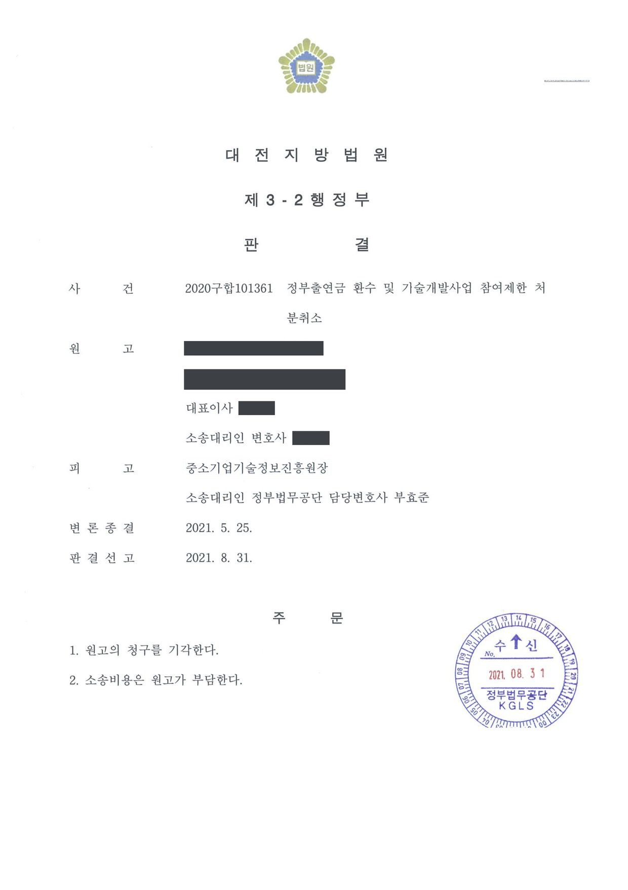

정부출연금 환수 및 국가연구개발사업 참여제한처분 취소소송
대전지방법원 2020구합101361 · 담당변호사 부효준
판결문

사건의 요지
중소기업 상용화기술개발사업 협약에 따라 지급된 정부출연금의 환수처분과 참여제한처분에 관하여, 사업비 집행의 적정성과 협약 위반 여부, 처분의 비례원칙 위반 여부가 다투어진 사건입니다.
사건의 주요 내용
원고는 전자·전기제품과 부품의 수출입 등을 하는 중소기업으로, 2017년 구매조건부 신제품개발사업(해외수요처) 기업제안과제 공고에 따라 친환경 전기 삼륜차 개발 과제를 신청하였고, 전문기관은 2017년 12월 원고를 지원대상으로 선정하여 협약을 체결하였습니다. 총 기술개발기간은 2017년 11월부터 2019년 10월까지 24개월, 정부출연금은 4억 8,800만 원이었으며, 사업계획서에는 주관기관인 원고가 부분품과 완성차 제작 등 기술개발의 95%를 수행하는 것으로 기재되어 있었습니다.
원고가 2018년 9월 1차년도 진도보고서를 제출하자 관리기관은 진도점검에서 '자체 설계 및 개발 내역이 불분명하다'며 '보류'로 통보하였고, 전문기관은 2018년 12월 문제과제 특별평가에서 설계·시험 데이터 등 개발 증빙자료가 제시되지 않았고 사업비가 실제 개발보다 외주 용역에 치중되었다는 등의 이유로 과제를 '중단(불성실)'으로 판정하였습니다. 원고의 이의신청에 따른 2019년 2월 이의신청 특별평가에서도 같은 결론이 유지되었습니다.
전문기관은 제재조치위원회 심의를 거쳐 2019년 12월 '연구개발과정을 불성실하게 수행하여 그 결과가 극히 불량한 경우'에 해당한다는 이유로 정부출연금 전액(정산금을 제외한 61,257,623원)의 환수처분과 3년의 참여제한처분을 하였고, 원고의 제재조치 이의신청 뒤 2020년 8월 참여제한기간의 시기와 종기를 뒤로 옮기는 변경을 하였습니다. 원고는 환수처분과 참여제한처분의 취소를 구하는 소송을 제기하였고, 부효준 변호사는 피고 전문기관을 대리하였습니다.
쟁점
- 전문가로 구성된 특별평가위원회와 이의신청 특별평가위원회의 '중단(불성실)' 판정에 사실인정의 중대한 오류나 객관적 불합리가 있다고 볼 수 있는지
- 사업계획서상 주관기관이 95%를 자체 수행하기로 한 과제에서 차체 제작·기본 시스템 장착·배터리팩 조립을 외부에 의뢰한 것이 불성실 수행 판단의 근거가 되는지
- 이의신청 이후 참여제한기간의 시기·종기를 변경한 것이 당초 처분의 위법사유가 되거나 지나치게 가혹한지
원고의 주장
- 1차년도 사업계획서에는 공인 시험 데이터를 제출한다는 내용이 없고, 원고는 과제의 핵심인 태양광 제어장치, 배터리팩과 배터리 관리시스템, 모터 컨트롤러, LED 램프의 회로도와 설계 데이터, 제작된 부품과 보드 등을 제시하였으므로 기술개발이 진행되지 않았다고 본 것은 사실을 오인한 것이라고 주장하였습니다.
- 양산과 수요처 요구를 반영하기 위하여 해외 업체로부터 차체에 조향·제동 등 기본 시스템만 장착된 차량을 들여온 뒤 핵심 부품은 자체 설계·개발·제작하였고 배터리팩은 일정 문제로 조립만 외부에 맡겼을 뿐이므로, 단순 조립 의뢰를 이유로 자체 개발이 아니라고 보거나 2개년 과제의 1차년도 내용만으로 주관기관의 역할이 미흡하다고 판단한 것은 잘못이라고 주장하였습니다.
- 자체 디자인으로 특허를 출원하였고 장비·재료의 입고와 집행서류를 제대로 관리하고 있으며, 전기 삼륜차는 해외 시장가능성과 기술적 차별성이 있고 현지 업체와 수요계약도 맺었으므로 사업화 가능성이 낮다고 본 평가도 잘못이라고 주장하였습니다.
- 이의신청 뒤 참여제한기간을 2020년 9월부터 2023년 9월까지로 변경한 것은, 당초 제재조치위원회 평가 직후부터 실질적인 제재가 시작되었음을 고려하면 지나치게 가혹하다고 주장하였습니다.
부효준 변호사의 주장
- 특별평가위원회와 이의신청 특별평가위원회가 모두 과제를 '중단'과 '불성실 수행'으로 판정하였고, 전문가로 구성된 위원회의 평가는 사실인정에 중대한 오류가 있거나 객관적으로 불합리하다는 특별한 사정이 없는 한 존중되어야 하며, 연구개발을 성실하게 수행하였다는 사실은 원고가 증명하여야 한다고 주장하였습니다.
- 사업계획서에는 1차년도 연차목표로 부품 단위와 시작차에 대한 소음·진동 시뮬레이션, 전자기 적합성 검사, 환경시험 등 성능시험이 제시되어 있었으나 진도보고서에는 그에 대응하는 성능시험 결과가 없었고, 주관기관이 기술개발의 95%를 수행한다고 기재하였음에도 차체 제작과 기본 시스템 장착, 배터리팩 조립을 외부에 의뢰하여 실제 자체 개발 비중이 30% 수준에 그쳤다는 점을 들어 처분사유가 인정된다고 다투었습니다.
- 참여제한기간의 변경은 이 사건 처분 이후 원고의 이의신청에 따라 심의를 위하여 효력시기를 바꾼 별개의 변경처분이므로 이 사건 처분의 위법사유가 될 수 없다고 주장하였습니다.
법원의 판단
법원은 행정청이 고도의 전문적·기술적 사항에 관하여 전문적인 판단을 하였다면 사실인정에 중대한 오류가 있거나 판단이 객관적으로 불합리하다는 등의 특별한 사정이 없는 한 존중되어야 한다는 대법원 판례(2016. 1. 28. 선고 2013두21120 판결)와, 연구개발을 성실하게 수행하였다는 사실은 이를 주장하는 당사자가 증명할 책임이 있고 불성실 수행 여부는 사업계획서의 내용, 사업추진의 경과, 협약 위반 여부 등을 종합하여 사회통념에 따라 판단한다는 판례(2019. 4. 11. 선고 2018두52730 판결)를 판단 기준으로 삼았습니다.
그리고 특별평가위원회와 이의신청 특별평가위원회가 모두 '중단'·'불성실 수행'으로 판단하였는데 그 공정성·전문성·객관성을 의심할 특별한 사정이 없고, 사업계획서의 1차년도 연차목표와 개발일정에 제시된 성능시험 결과가 진도보고서에 기재되어 있지 않으며, 원고가 스스로 인정하듯 차체 제작과 기본 시스템 장착, 배터리팩 조립을 해외 업체 등에 의뢰하여 위원회가 자체 개발 비중을 30% 수준으로 판정한 데에 중대한 오류가 있다고 볼 수 없다고 하였습니다. 디자인, 연구장비·재료 관리, 연구비와 집행서류 관리에 관한 평가도 마찬가지로 보았습니다.
참여제한기간의 변경에 관하여는, 이 사건 처분 이후에 이루어진 별개의 변경처분이므로 이 사건 처분에 영향을 미치는 위법사유가 될 수 없고, 원고의 이의신청에 따라 심의를 위하여 효력시기를 변경한 것에 불과하여 지나치게 가혹하다고 볼 수도 없다고 하였습니다. 결국 재량권 일탈·남용을 인정할 증거가 없다는 이유로 원고의 청구를 받아들이지 않았습니다.
행정청이 관계 법령이 정하는 바에 따라 고도의 전문적이고 기술적인 사항에 관하여 전문적인 판단을 하였다면, 판단의 기초가 된 사실인정에 중대한 오류가 있거나 판단이 객관적으로 불합리하거나 부당하다는 등의 특별한 사정이 없는 한 존중되어야 하고, 행정청이 위와 같은 전문적인 판단에 기초하여 재량권의 행사로서 한 처분은 비례의 원칙을 위반하거나 사회통념상 현저하게 타당성을 잃는 등 재량권을 일탈하거나 남용한 것이 아닌 이상, 위법하다고 볼 수 없다(대법원 2016. 1. 28. 선고 2013두21120 판결 참조). 그리고 연구개발을 성실하게 수행하였다는 사실은 이를 주장하는 당사자가 증명할 책임이 있고, '연구개발과정의 불성실 수행 여부'는 연구개발사업의 전제가 된 사업계획서의 내용, 사업추진의 구체적 경과, 사업의 기초가 된 협약의 위반 여부 등 제반 사정을 종합적으로 고려하여 사회통념에 따라 합리적으로 판단하여야 한다(대법원 2019. 4. 11. 선고 2018두52730 판결 등 참조).
대전지방법원 2020구합101361 판결 이유 '4. 가. 관련 법리'
피고의 특별평가 평가위원회, 이의신청 특별평가위원회는 모두 이 사건 과제를 '중단' 및 '불성실 수행'으로 판단하였고, 원고가 제출한 증거만으로는 전문가로 구성된 위 각 위원회들이 한 평가의 공정성과 전문성, 객관성을 의심할 만한 특별한 사정 내지 과정이나 내용에 하자가 있다고 보기 부족하고 달리 이를 인정할 증거가 없다.
대전지방법원 2020구합101361 판결 이유 '4. 나. 판단' ① 부분
한편, 피고가 2020. 8. 19. 원고에 대한 참여제한기간을 변경한 것은 이 사건 처분 이후에 이루어진 별개의 변경 처분에 의한 것이므로 이를 이 사건 처분에 영향을 미치는 위법사유라고 보기 어려울 뿐만 아니라, 이는 원고의 이의신청에 따라 그 심의를 위하여 참여제한처분의 효력시기를 변경하게 된 것에 불과하므로 지나치게 가혹하다고 보기도 어렵다.
대전지방법원 2020구합101361 판결 이유 '4. 나. 판단' ⑤ 부분
※ 판결 이유 가운데 이 사건의 판단 기준이 된 부분을 그대로 옮긴 것으로, 당사자 이름 등은 가렸습니다.
이 사건이 보여 주는 것
국가연구개발 과제의 '불성실 수행' 판정을 다투는 소송에서 법원은 전문가 위원회의 평가를 원칙적으로 존중하고, 처분을 받은 쪽이 사실인정의 중대한 오류나 객관적 불합리를 증명하여야 합니다. 성실하게 수행하였다는 사실의 증명책임도 수행기관에 있으므로, 사업계획서에 적은 연차목표와 개발일정에 대응하는 시험 결과와 증빙자료를 진도보고서에 빠짐없이 담아 두는 것이 중요합니다.
특히 사업계획서에 자체 개발 비중을 높게 적어 놓고 핵심 부분을 외주로 처리하면 그 자체가 불성실 수행 판단의 근거가 될 수 있습니다. 또한 이의신청으로 참여제한기간의 시기와 종기가 뒤로 밀리는 것은 처분의 효력을 일시 정지하고 심의하기 위한 조치로 평가되므로, 그 변경을 들어 당초 처분의 위법을 주장하기는 어렵습니다.
비슷한 처분을 받으셨다면
국가연구개발 제재처분은 사전통지를 받은 날부터 20일 이내에 재검토 요청 의견을 내고, 처분이 있음을 안 날부터 90일 이내에 취소소송을 제기해야 합니다. 처분서나 사전통지서를 받은 날짜부터 확인해 드립니다.